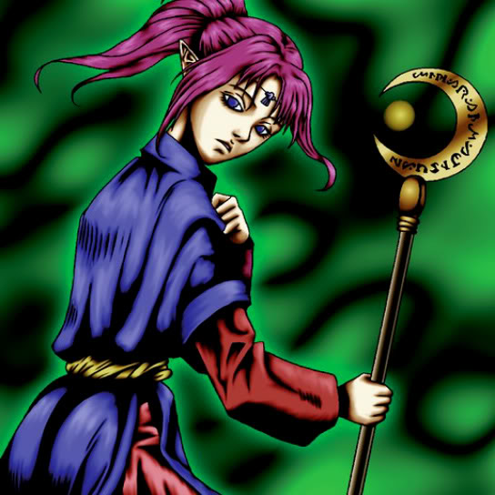

Magician of Faith

Description: "When this card is flipped face-up, select 1 spell card from all graveyards and revive it in own Summoning Area. However, can only be activated in a turn when 'Magician of Faith' is being controlled."
STATS
ATK: 300
DEF: 400DECK COST
Deck Cost per Card: 12EFFECT NOT IMPLEMENTED
Fusion List (16 Possible Fusions)
- Magician of Faith + Bean Soldier = Queen of Autumn Leaves
- Magician of Faith + Beaver Warrior = Nekogal #2
- Magician of Faith + Dancing Elf = Mystical Elf
- Magician of Faith + Dark Plant = Queen of Autumn Leaves
- Magician of Faith + Gate Deeg = Nekogal #2
- Magician of Faith + Goddess of Whim = Dark Witch
- Magician of Faith + Graveyard and the Hand of Invitation = Magical Ghost
- Magician of Faith + Happy Lover = Dark Witch
- Magician of Faith + Hourglass of Courage = Dark Witch
- Magician of Faith + Kaminarikozou = The Immortal of Thunder
- Magician of Faith + Laughing Flower = Queen of Autumn Leaves
- Magician of Faith + Morphing Jar = Mystical Sand
- Magician of Faith + Rainbow Flower = Queen of Autumn Leaves
- Magician of Faith + Silver Fang = Nekogal #2
- Magician of Faith + Torike = Nekogal #2
- Magician of Faith + Yamatano Dragon Scroll = Blackland Fire Dragon